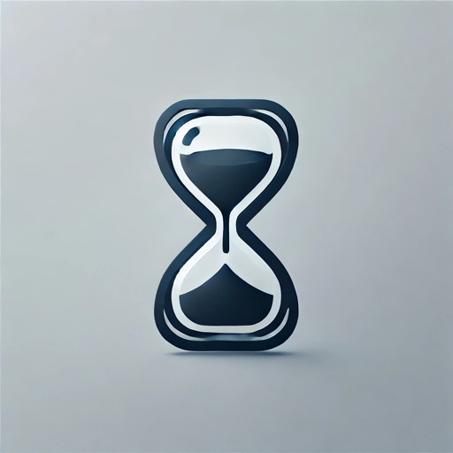
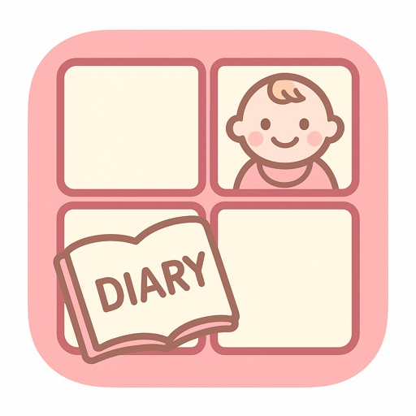
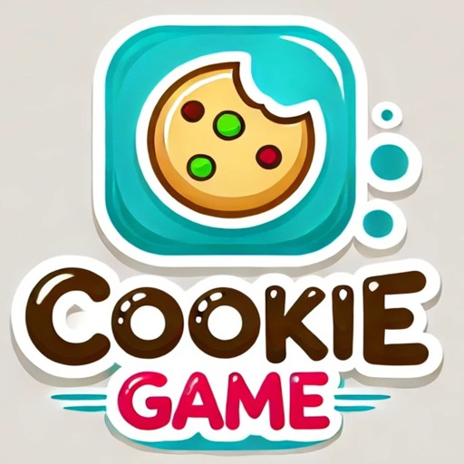
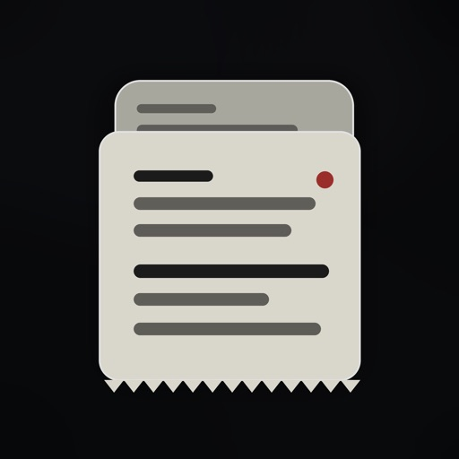
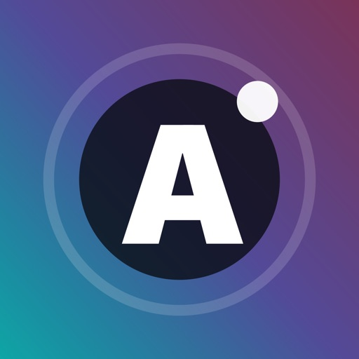
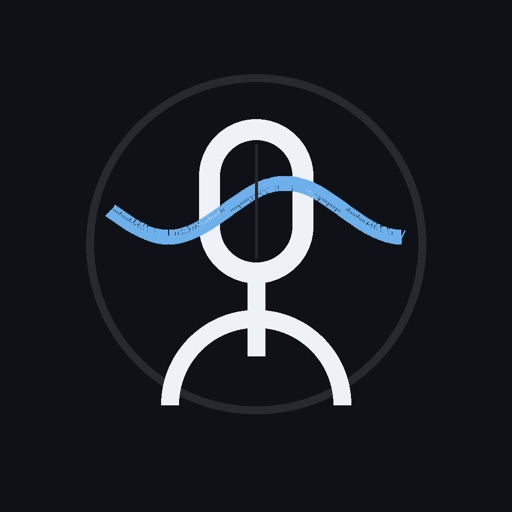

日本情報マートから取材
日本情報マート
—TxPPIE / 一二三晴也
日本情報マート
—インデペンデンツクラブ
↗大阪イノベーションハブ
↗慶應義塾大学薬学部
—VENTURE PITCH ONLINE
↗公益財団法人Soil / note
↗U-FINO / JETRO
↗Sushi Tech Tokyo 2026
↗NPO法人生態会
↗Booming!
↗U-FINO
↗Nマイナス
↗LINK-J
↗大阪府中小企業診断士協会
↗琉球アスティーダ
↗栖峰投資ワークス
↗NPO法人生態会
↗公益財団法人Soil
↗薬剤師100人カイギ
↗BAMBOO INCUBATOR
↗大阪産業局
↗大阪府ベンチャー企業成長プロジェクト
↗大阪大学
↗該当する掲載はありません。
おかし・カロリー記録

定期的な交換時期を管理

日記と写真をAIで4コマに

クッキー2048パズル

一枚考察ミステリー

ソーシャルクイズ

5秒でわかる毎日の声チェック